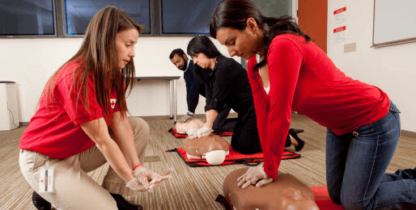
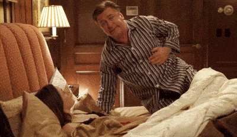

This account syndicates news from other media outlets.


Fewer than one in five men who suffer a cardiac arrest during sex survive, according to new research.
This is because their partner does not know how to perform a simple, life saving technique, say scientists.
It underlines the importance of teaching CPR (cardiopulmonary resuscitation) to the general population, they warned.
Sex is known to trigger a sudden cardiac arrest and this causes the heart to suddenly stop beating. It usually occurs without warning.
The 13-year study of more than 4,500 sudden cardiac arrests (SCAs) in Portland, Oregon, found only a third of cases that occurred during intercourse received ‘bystander CPR’.
It was determined this accounted for the less than 20 per cent of patients who survived to hospital discharge.

Senior study author Dr Sumeet Chugh, associate director of the Cedars-Sinai Heart Institute, Los Angeles, said: ‘Even though SCA during sexual activity was witnessed by a partner, bystander CPR was performed in only one third of the cases.
‘These findings highlight the importance of continued efforts to educate the public on the importance of bystander CPR for SCA, irrespective of the circumstance.’
The British Heart Foundation says about 10,000 people die in the UK each year because bystanders do not know how to do CPR if they see someone having a cardiac arrest.
CPR involves giving regular chest compressions to make the heart pump blood around the body. It has been found to double the chance of survival.
Dr Chugh and colleagues showed although the overall risk of having a cardiac arrest during sex is low, death rates are high.
Only a small percentage of cases are related to sexual activity, but survival remains low.
The study published in the Journal of the American College of Cardiology said this was despite a partner being present.

It results in around 350,000 deaths annually in the US, and about 100,000 in the UK. It is known sex may trigger cardiac arrests.
So the researchers looked at the community-based Oregon Sudden Unexpected Death Study (Oregon SUDS) database from 2002 to 2015 to discover their frequency during or within an hour after sex among over 18s.
All reported cases were based on emergency medical service reports containing detailed information regarding their cause.
In total, the researchers identified 4,557 during the study period, of which 34 (0.7%) were linked to sexual activity.
On average these patients were more likely to be male, middle aged, African-American and have a history of cardiovascular disease, with a majority taking medication for it.
Overall, the researchers said they found a relatively low burden of cardiac arrest in relation to sex.
Most cases were men with a previous history of cardiovascular disease. The researchers also noted some cases after sex may also involve medications, stimulants and alcohol use.
Don’t Miss: 5 Men’s Health Supplements That Actually Work